Changelog for QGIS 2.16¶

This is the log for the next release of QGIS - version 2.16.0 ‘Nødebo’. The Department of Geoscience and Natural Resource Management Forest and Landscape College in Nødebo were hosts to the First International QGIS conference and developer meeting in May 2015.
This is not a Long Term Release
This release is not designated as a Long Term Release (LTR). Users wishing to have a version of QGIS which does not change and receives bug fixes for at least 1 year are invited to use the current LTR release 2.14 (which now becomes our official LTR with the release of QGIS 2.16).
New Features in QGIS 2.16 ‘Nødebo’
If you are upgrading from QGIS 2.14 you will find a great many new features in this release. We encourage you to peruse the changelogs for previous releases as this QGIS 2.16 release includes all features published in those releases too.
Whenever new features are added to software they introduce the possibility of new bugs - if you encounter any problems with this release, please file a ticket on the QGIS Bug Tracker.
Pronouncing Nødebo…
Thanks
We would like to thank the developers, documenters, testers and all the many folks out there who volunteer their time and effort (or fund people to do so). From the QGIS community we hope you enjoy this release! If you wish to donate time, money or otherwise get involved in making QGIS more awesome, please wander along to qgis.org and lend a hand!
QGIS is supported by donors and sponsors. A current list of donors who have made financial contributions large and small to the project can be seen on our donors list. If you would like to become an official project sponsor, please visit our sponsorship page for details. Sponsoring QGIS helps us to fund our six monthly developer meetings, maintain project infrastructure and fund bug fixing efforts. A complete list of current sponsors is provided below - our very great thank you to all of our sponsors!
QGIS is Free software and you are under no obligation to pay anything to use it -
in fact we want to encourage people far and wide to use it regardless of what
your financial or social status is - we believe empowering people with spatial
decision making tools will result in a better society for all of humanity.
If you are able to support QGIS, you can  .
.
Sponsors for QGIS version 2.16.0¶
Annually we also receive support from various organisations who appreciate the work we do and would like to facilitate the sustained development effort that goes into the project. These sponsors are listed below with our thanks!
|


|
|
|
|


|
www.terrelogiche.com, Italy (06.2015-06.2017) |
QGIS-PT (Portuguese QGIS user group), Portugal (06.2016-06.2017) |
NCC, Sweden (05.2016-05.2017) |
SOLTIG (Soluciones en Tecnologías de Información Geográfica), Costa Rica (06.2016-06.2017) |
Gaia3D, Inc., South Korea (05.2015-05.2017) |
GEPOL, Poland (04.2016-04.2017) |
|
Royal Borough of Windsor and Maidenhead, UK (04.2015-04.2017) |
GFI - Gesellschaft für Informationstechnologie mbH, Germany (04.2015-04.2017) |
Teaching Jobs with Footprints, Canada (04.2016-04-2017) |
FORNAT AG, Switzerland (04.2014-04.2017) |
National Parks UK, United Kingdom (03.2016-03-2017) |
KBB Underground Technologies, Germany (03.2014-03.2017) |
BGEO OPEN GIS, SL, Spain (03.2016-03-2017) |
Ager Technology, Spain (03.2014-03.2017) |
|
Asociación Geoinnova, Spain (03.2016-03-2017) |
Gis3W, Italy (01.2014-01.2017) |
|
GIS-Support, Poland (02.2015-03-2017) |
www.molitec.it, Italy (01.2014-03.2017) |
|
Chartwell Consultants Ltd., Canada (03.2015-03.2017) |
Trage Wegen vzw, Belgium (03.2015-03.2017) |
|
GKG Kassel (Dr.-Ing. Claas Leiner), Germany (03.2014-03.2017) |
CawdorForestry Resource Management, Scotland (02.2016-02.2017) |
ChameleonJohn, USA (02.2016-02.2017) |
2D3D.GIS, France (12.2015-12.2016) |
Dr. Kerth + Lampe Geo-Infometric GmbH, Germany (12.2015-12.2016) |
MappingGIS, Spain (11.2015-11.2016) |
|
HostingFacts.com, Estonia (12.2015-12.2016) |
Urbsol, Australia (11.2014-11.2016) |
Lutra Consulting, UK (10.2015-10.2016) |
WhereGroup GmbH & Co. KG, Germany (08.2015-08.2016) |
|
Nicholas Pearson Associates, UK (07.2015-07.2016) |
QGIS Polska, Poland (07.2015-07.2016) |


{kind=link}
{kind=link}
{kind=link}
{kind=link}
{kind=link}
{kind=link}
{kind=link}
{kind=link}
{kind=link}
{kind=link}
{kind=link}
{kind=link}
{kind=link}
{kind=link}
General¶
Feature: Copying features in GeoJSON format¶
The previous setting for include WKT when copying features has been replaced with
a choice of copying features as “Plain text, attributes only”, “Plain text, WKT
geometry” and a new “GeoJSON” option. When set to “GeoJSON”, copying features in
QGIS will place a GeoJSON text representation of the features on the clipboard
for easy pasting into other applications/JavaScript code. These settings can be
found in the Settings -> Options -> Data Sources -> Copy features as.
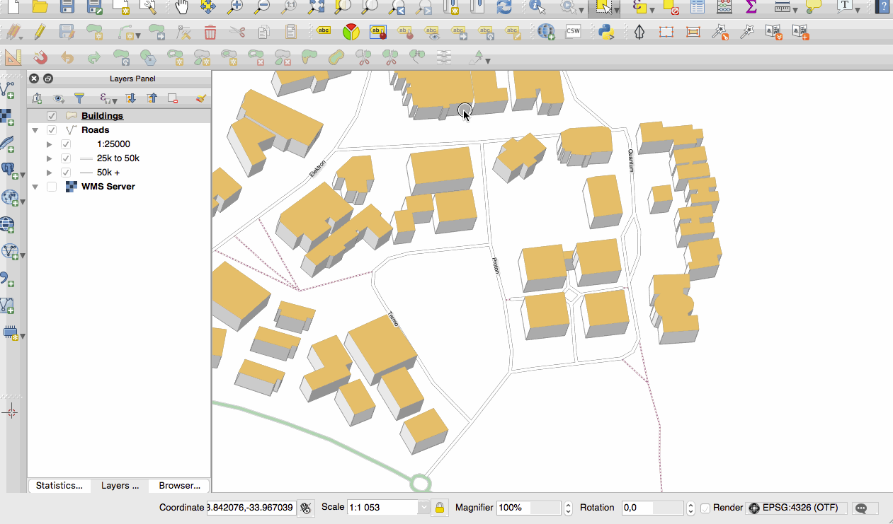
This feature was developed by Nyall Dawson (North Road)
Feature: Store spatial bookmarks in project files¶
If you are creating a spatial bookmark, you can now choose to store the bookmark in your active project file. Scroll across in the bookmarks panel to find the checkbox that enables this capability.
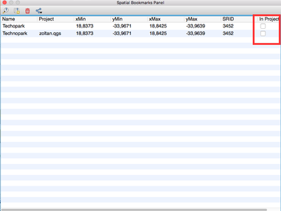
This feature was developed by Stéphane Brunner
Feature: Support for GNSS GNRMC messages¶
QGIS can now handle GLONASS satellite data ($GN* lines) to get a more precise Position from external GPS/GNSS Receivers.
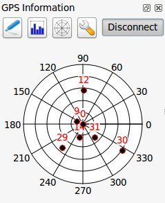
This feature was developed by Ondřej Fibich
Feature: Paste GeoJSON features directly into QGIS¶
QGIS clipboard handler can now parse many additional text formats, including native support for GeoJSON feature collections. This allows you to directly copy and paste GeoJSON strings into QGIS and have them automatically converted into QGIS features and geometries.

This feature was developed by Nyall Dawson (North Road)
Feature: Map tip improvements¶
Maptip visibility is now preserved across sessions
Maptips can now show HTML content, including images, videos and URL links

This feature was funded by OPENGIS.ch GmbH
This feature was developed by Marco Bernasocchi (OpenGIS.ch)
Feature: Desktop MIME icons for QGIS file types¶
It’s now easier to recognise and differentiate QGIS’s file types on your operating system files manager. There are now desktop MIME Icons for the following file types:
*.qgs - QGIS Project file
*.qml - Layer settings file
*.qlr - Layer definitions file
*.qpt - Composer template file

This feature was developed by Alexandre Neto
User Interface¶
Feature: Map canvas magnifier¶
A magnifier tool has been added to QGIS, which allows you to magnify the map at a given scale. This allows you to zoom in to a map without altering the map scale, making it easier to accurately tweak the positions of labels and symbols. Additionally, a default magnification value can be defined in settings, which is very useful for high resolution screens!

This feature was funded by the QWAT project
This feature was developed by Paul Blottiere (Oslandia)
Feature: Improvements to map zooming¶
QGIS 2.16 brings improvements to the way you can zoom in and out of the map canvas.
Holding down Ctrl while using the mouse wheel to zoom in or out now results in a finer zoom. This behavior brings canvas into line with composer.
Pressing Ctrl++ or Ctrl+- performs an immediate zoom in/out on the map canvas
When certain map tools are active, you can perform a web-map style zoom by holding down Shift and dragging a rectangle on the map to zoom to that area. This is enabled for the map tools which are not selection tools (since they use shift for adding to selection), and edit tools.

This feature was developed by Nyall Dawson (North Road)
Feature: Redesigned interactive gradient editor¶
The gradient ramp editor has been reworked with interactive controls for easier manipulation of gradients. The dialog now also includes an interactive plot for modifying gradient stops via the color HSV or RGB values. The new editor features:
drag to move color stops
double clicking to add a new stop
pressing delete will remove the selected stop
pressing arrow keys will move the selected stop, and holding shift while pressing a cursor key results in a larger move
drag and drop a color onto the widget to add a new stop

This feature was developed by Nyall Dawson (North Road)
Feature: Choice of default view for the attribute dialog¶
In previous QGIS versions the attribute dialog would always be opened in the table view. Now, you have the choice of always defaulting the dialog to either the table view, form view or to remember the last view used.
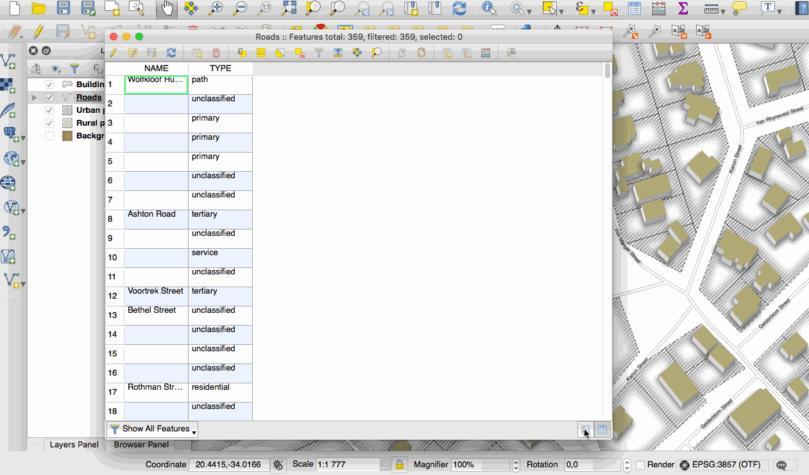
This feature was developed by Nyall Dawson (North Road)
Feature: Improvements to calendar popups¶
Today’s date is now highlighted in calendar popup widgets, making it easier to select a date relative to the current day.

This feature was developed by Nyall Dawson (North Road)
Feature: Improved color pickers¶
The color button dropdown menus now show a color wheel, allowing for very rapid adustments to colors.
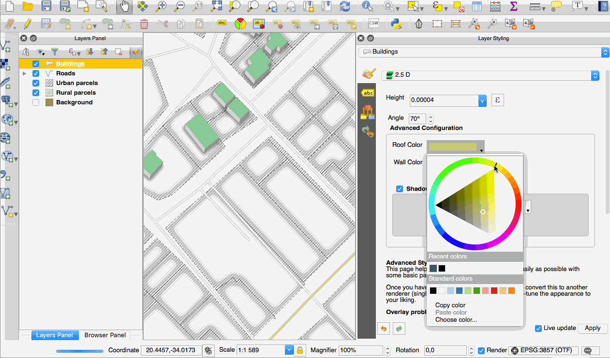
This feature was developed by Nathan Woodrow
Feature: Copy cell contents from attribute table¶
A new context menu item called Copy cell content is now available in the menu
opened by a right click on a cell within the attribute table. When this button
is clicked, the content of the cell is copied in the clipboard, whatever the kind of widget.
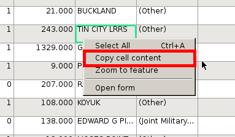
This feature was developed by Paul Blottiere (Oslandia)
Feature: Improved HiDPI support¶
HiDPI screen users will notice an improved user interface as more work has been done to upgrade icons to rely on SVG images. As of QGIS 2.16, all toolbars are now HiDPI-compatible.
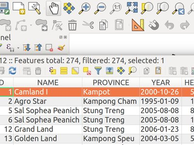
This feature was developed by Mathieu Pellerin
Feature: Improved map select tool behaviour¶
The behavior of the map based selection tools has been refined, with the following changes:
For click-and-drag selections:
holding Shift = add to selection
holding Ctrl = subtract from selection
holding Ctrl+Shift = intersect with current selection
holding Alt (can be used with Shift/Ctrl too) = change from “intersects” to “fully contains” selection mode
For single-click selections:
holding Shift or Ctrl = toggle whether feature is selected (i.e. either add to current selection or remove from current selection)
This change brings the canvas behavior into line with other design apps and also with the composer behavior.
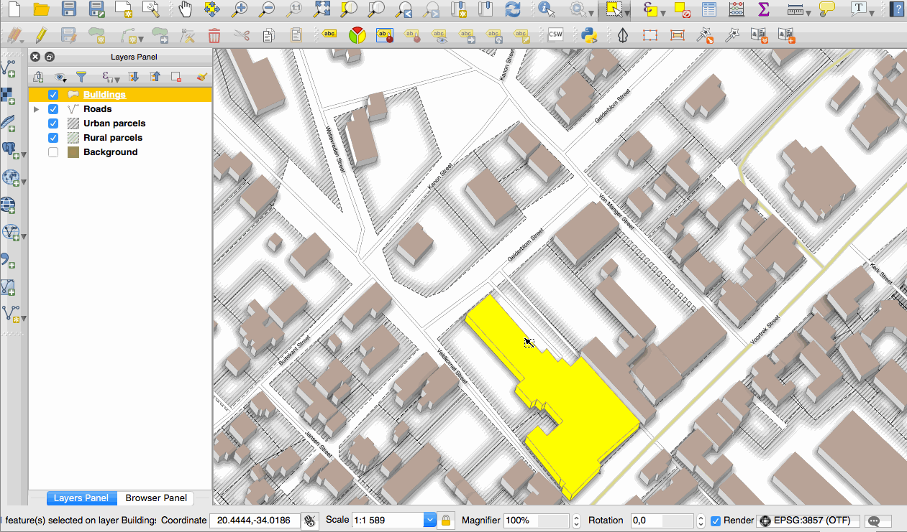
This feature was developed by Nyall Dawson (North Road)
Documentation Updates¶
Feature: QGIS 2.14 Documentation¶
Having now an automatic way to create a ticket in the documentation repository for each new feature in QGIS, we are sure that all new features is now in the documentation.
The documentation team worked hard on three releases of QGIS: 2.10, 2.12 and 2.14 so the documentation is now up to date for the current Long Term Release of QGIS. This is around 180 new features that have been documented in 4 months.
If you think there are some missing features in the documentation, feel free to add a new ticket, write small text to describe it or better push a contribution.
The documentation team has also worked on improving the documentation guidelines in order to ease contribution’s process for new doc writers and help translators.
The documentation team will now work hard the next months to document the current stable release (2.16) of QGIS.

Check the 2.10, 2.12 and 2.14 milestone to see all the documentation work that has taken place:
Feature: Authentication system’s documentation in users manual¶
The authentication system features introduced in earlier versions of QGIS (2.12 and 2.14) are now fully documented in the Users manual, and will be a great contribute to the system’s understanding and adoption.
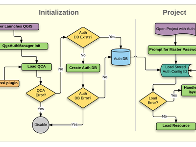
This feature was funded by Boundless
This feature was developed by Larry Shaffer
Symbology¶
Feature: Arrow symbol layer¶
The “arrow” symbol layer is a symbol layer allowing to draw straight or curved arrows from a line layer.
In curved mode, nodes of the line layer this symbol layer is applied to are used as control points for circle arcs. Arrows can be filled with whatever existing filling style QGIS supports. Options also allows to select the type of the arrow (with one or two heads, plain or halved), its width (that may be variable) and size of the heads.
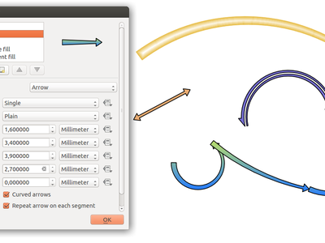
This feature was funded by MEEM (French Ministry of Sustainable Development) and Andreas Neumann
This feature was developed by Hugo Mercier
Feature: New “Filled marker” symbol layer type¶
A “filled marker” is similar to the simple marker symbol layer, except that it uses a fill sub symbol to render the marker. This allows use of all the existing QGIS fill (and outline) styles for rendering markers, eg gradient or shapeburst fills.
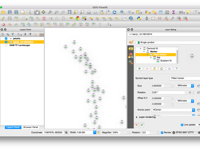
This feature was developed by Nyall Dawson (North Road)
Feature: New accessibility and low vision symbols¶
Additional accessibility and low visions symbols are now available in QGIS’ SVG symbols collection.
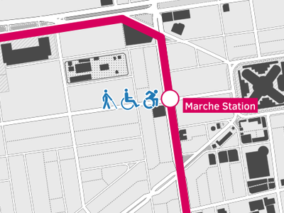
This feature was developed by Mathieu Pellerin
Feature: New simple marker symbols¶
semicircle, third, quarter circles
half triangle markers
filled cross and hexagon markers
diamond ellipse marker

This feature was developed by Mathieu Pellerin
Feature: “No symbol” renderer¶
Using the new “No symbol” renderer in QGIS 2.16 no symbol will be drawn for features, but labeling, diagrams and other non-symbol parts will still be shown.
Selections can still be made on the layer in the canvas and selected features will be rendered with a default symbol. Features being edited will also be shown.
This is intended as a handy shortcut for layers which you only want to show labels or diagrams for, and avoids the need to render symbols with totally transparent fill/border to achieve this. It may not sound useful from the title - but it’s quite a handy shortcut!
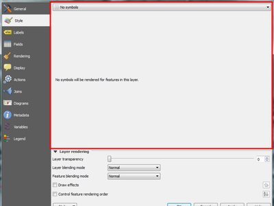
This feature was developed by Nyall Dawson (North Road)
Feature: More control over centroid fill point rendering¶
An option has been added to control whether the marker is drawn on all parts or a single part of multi-features.

This feature was developed by Mathieu Pellerin
Feature: Outline setting for font markers symbol¶
Font markers symbol can now have outline, which can help increasing visibility of such symbols by adding an outline buffer color. Emoji-enabled font characters can serve as nice markers when used with a thick outline.

This feature was developed by Mathieu Pellerin
Feature: Control outline join style for simple, ellipse, and font markers¶
Users can now change the join style of outlines for simple, ellipse, and font markers to fine-tune their symbology.
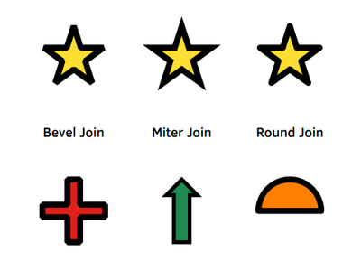
This feature was developed by Mathieu Pellerin
Feature: New map tool for interactively setting point symbol offset¶
Allows for setting a point’s offset if it is bound to a field using data defined
overrides. The offset field should be a text field. The map tool to interactively
set the offset is in the Advanced digitizing toolbar in the icon group with the
Rotate Point Symbols tool. See the attached animation for an example. Note that when
making subsequent adjustments to the offset, you should drag from the original
point vertex marker, not the current position of the symbol as rendered on the map.

This feature was developed by Nyall Dawson (North Road)
Feature: Style Dock¶
The style dock is a new, far more efficient, way to manage layer styles in QGIS. It supports a live preview of style changes as they are made, full undo / redo support and a less distracted workflow as you prepare your map cartography. For a comprehensive overview of the style dock’s features, please see style dock part 1 and style dock part 2.
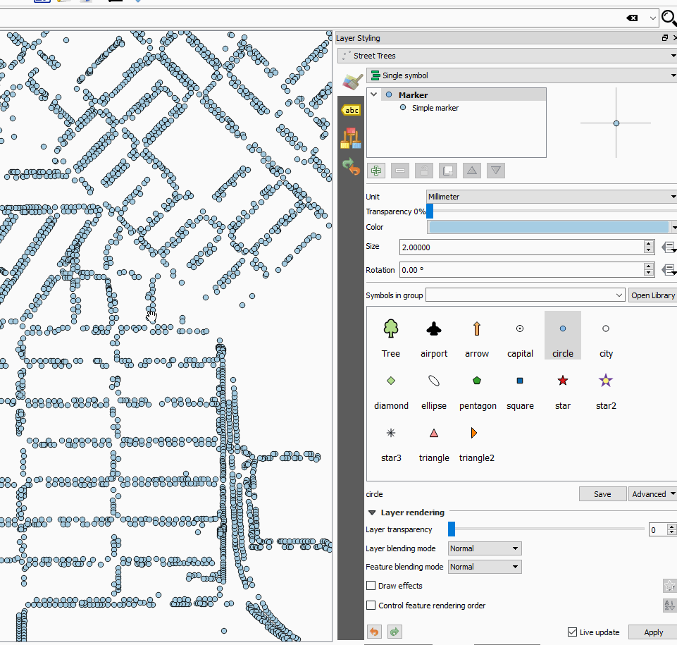
This feature was developed by Nathan Woodrow
Labelling¶
Feature: Labeling map tools now work with rule-based labeling¶
In previous versions of QGIS when rule-based labeling was in place, you could not use the labeling map tools to interactively place and rotate label positions. This is now supported.
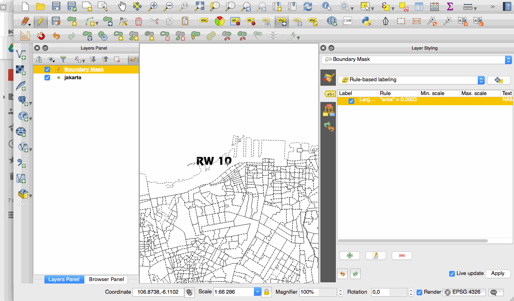
This feature was developed by Martin Dobias
Diagrams¶
Feature: Legend entries for diagram size¶
A new “legend” tab has been added to diagram properties, allowing both the existing attribute legend and a new size legend to be enabled/disabled. The size legend has a configurable marker symbol.

This feature was funded by ADUGA
This feature was developed by Nyall Dawson (North Road)
Feature: Unit selection for outline width¶
Outline width unit selection is now available. This allows for a map unit sized diagram that will grow and shrink based on map scale while maintaining a fixed millimeter outline width.

This feature was developed by Mathieu Pellerin
Feature: Diagrams behave like labels and can be managed from toolbar¶
Originally, there was a toolbar for labels allowing to:
set labeling options for labels of the current layer
highlight the pinned labels. Highlighting is green on editable layer, blue otherwise.
pin or unpin labels
move, show and hide labels
With this new feature, a new tool is available in the label toolbar allowing to set properties of diagrams for the current layer. Moreover, each tool mentioned above are now fully usable with diagrams too.
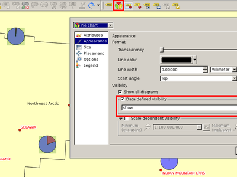
This feature was funded by MEEM (French Ministry of Sustainable Development)
This feature was developed by Paul Blottiere (Oslandia)
Rendering¶
Feature: New options for on the fly simplification¶
The user can select the algorithm to use when the local-side simplification runs to draw geometries faster. Now, QGIS provides three algorithms:
Distance (default algorithm, and the only option available in previous QGIS releases)
SnapToGrid
Visvalingam
This change also moves the local “on-the-fly” simplification from the provider and iterator classes to the rendering code. This avoids cases where simplification changes the geometry fetched from vector data providers, possibly affecting rule based and other expression based symbology. This is important when you have expressions that use the feature geometry (e.g. calculation of area) - we want to be sure that these calculations are done on the original geometry, not on the simplified ones.

This feature was developed by Alvaro Huarte
Feature: Quantile based classification for raster layers¶
This option can be found for single band pseudocolor rasters in the classification
mode dialog.

This feature was developed by Piers Titus van der Torren
Feature: Live hillshade renderer¶
QGIS 2.16 has a new raster renderer that will dynamically create a hillshade model from a Digital Elevation Model.
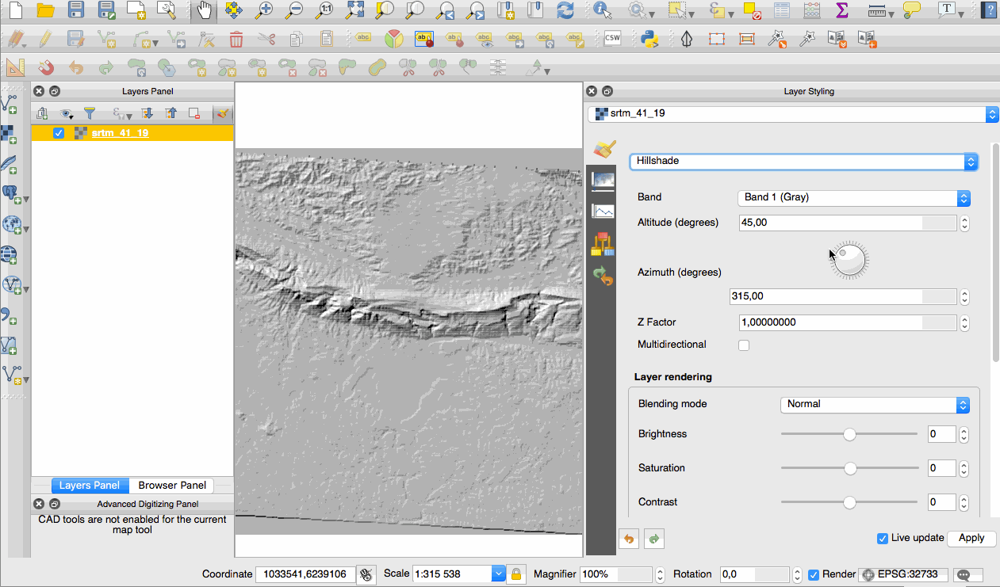
This feature was developed by Asger Skovbo Petersen and Nathan Woodrow
Digitizing¶
Feature: “Repeating” locking mode for constraints¶
When enabled, repeating locks are not automatically cleared when a new point is
added. They are handy when the same constraint must be repeated for multiple
points (eg adding vertices which are always 50 meters apart). This functionality
is available in the Advanced Digitizing Panel.
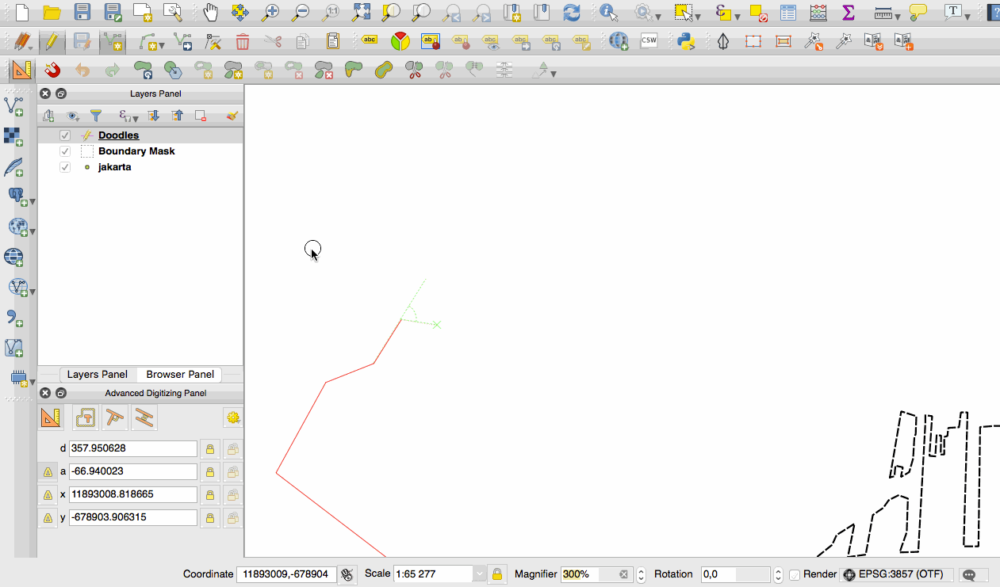
This feature was developed by Nyall Dawson (North Road)
Feature: Extend linestring geometries with reshape tool¶
The reshape tool now allows you to extend linestrings, by starting a reshape at either a line’s start or end point.
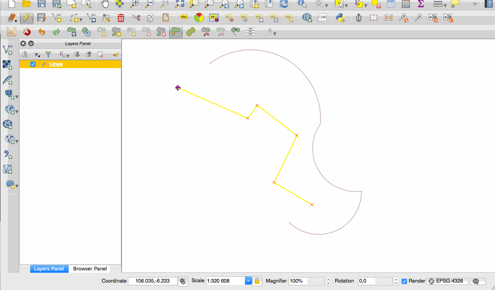
This feature was developed by Martin Dobias
Feature: Segmentation tolerance¶
Support was added to set the segmentation tolerance (maximum angle or maximum difference).
This setting controls the way circular arcs are rendered. The smaller maximum angle
(in degrees) or maximum difference (in map units), the more straight line segments
will be used during rendering. You can find this option in
Settings -> Options -> Rendering -> Curve Segmentation.
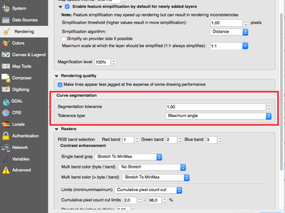
This feature was developed by Marco Hugentobler
Data Management¶
Feature: New configuration options for attribute table¶
Allow reordering the attribute table columns (via right click on field name header –> “Organize Columns” dialog; drag and drop to reorder)
Allow adding a new column to the attribute table to hold buttons for triggering an action based on the chosen feature
Columns can be hidden from the attribute table (via right click on field name header)
QGIS now remembers the width of any resized columns

This feature was funded by Canton of Zug, Switzerland and MEEM (French Ministry of Sustainable Development)
This feature was developed by Stéphane Brunner (Camptocamp) and Matthias Kuhn (OPENGIS.ch)
Feature: Multiple columns in attribute forms¶
When using the drag and drop designer, a user can specify over how many columns the fields should be distributed.
To enable multiple columns in the “Fields” tab of the layer properties:
Make sure you are using the drag and drop designer form mode
Double click group containers, such as tabs or groups
a small dialog will appear where you can select the nr of columns
The order will be first column, second column, nth column, next row, etc.
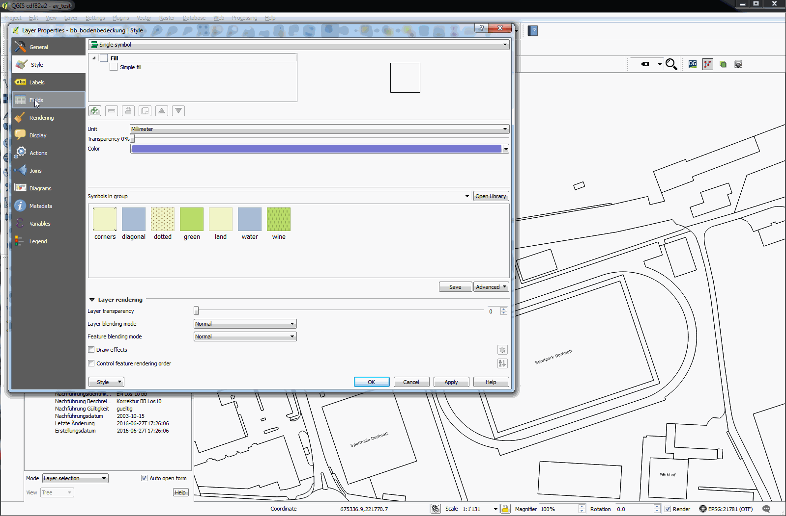
This feature was funded by Canton of Zug, Switzerland
This feature was developed by Matthias Kuhn
Feature: Control over attributes to export when saving a vector layer¶
Checkboxes have been added so that you can select which attributes you want included in the export, and you also now have the option to write “displayed” values rather than raw values. This option is useful for layers with relations, where you’d like a literal value included rather than a numeric identifier.
Depending on the data format, the “displayed value” is enabled by default, e.g. for export to spreadsheet formats (ODF, XLSX, CSV/Text).

This feature was partially funded by Canton of Zug, Switzerland
This feature was developed by Jürgen Fischer, Even Rouault
Feature: Forms view: side column now sortable¶
In the forms mode of the QGIS attribute table there is a side column one can use to directly jump to a specific feature. Up-to this release, this side view was not sortable. For sorting, one had to jump to the table mode and then back to the form mode. Now one can directly sort the feature by the feature attribute preview in the side panel by chosing the sort function on the expression drop-down button above the side column.

This feature was funded by Canton of Zug, Switzerland
This feature was developed by Matthias Kuhn (OpenGIS)
Feature: Relation reference widget: shortcut for adding new values¶
The relation reference widget was enhanced to allow quicker extensions of related value lists. If the checkbox “Allow adding new features” is enabled in the widget properties (access through “Fields” tab in layer properties), a green plus button will appear to the right of the widget. After pressing the “Plus” button, the dialog of the related table will open in “new record” mode where one can add an additional entry.
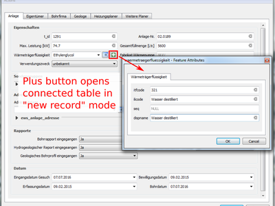
This feature was funded by Canton of Zug, Switzerland
This feature was developed by Matthias Kuhn (OpenGIS)
Feature: DXF export improvements¶
Support has been added for rule based labeling and rotated symbols, and for outputting 3D geometries.

This feature was developed by Jürgen Fischer
Feature: Top level widgets in drag and drop designer¶
It is now possible to put widgets directly on the form with the drag and drop designer. A drag and drop designer form can therefore exist without any tabs on it.

This feature was developed by Matthias Kuhn
Feature: Form based select and filter¶
In QGIS 2.16 a new mode was added to the attribute table dialog for searching and filtering features. When activated (using a button on the toolbar or by pressing CTRL+F), the dialog will switch to form view and all widgets are replaced with their search widget wrapper variant.
Alongside each widget is a tool button with options for controlling the search/filter behaviour for that field, eg “equal to”, “not equal to”, “is null”, “greater than”, etc.., with the options presented matching themselves to the corresponding field and widget type.
New buttons appear at the bottom of the form for either selecting matching features (with options for add to selection/remove from selection/select within current selection) or filtering features in the table (with options for adding features to a current filter or further restricting a current filter).
You can also access this mode with the new “Select by Value” option, or by pressing F3 with a layer selected.

This feature was funded by SIGE, City of Uster, Morges
This feature was developed by Nyall Dawson (North Road)
Feature: Create GeoPackage layers¶
The GeoPackage format is an open standard for
geospatial data that should be on your radar as a replacement for the ESRI
Shapefile format. It addresses many shortcomings with the shape file format
including limitations in the number and width of fields. In QGIS 2.16 it is now
easy to create a new GeoPackage as it has been integrated into the Layer toolbar
and Layer -> Create Layer menu.

This feature was developed by Even Rouault
Feature: Constraints on widgets¶
In previous QGIS versions there was no way to check the validity of values entered
by a user for a feature’s attributes. Now, a user can specify a constraint on
each widget in a layer’s attribute form. Constraints are created using QGIS’
expressions, eg "min_population" > 50000. A “Not Null” checkbox is also
available to indicate that a value must be entered for the field. Additionally,
descriptive text can be added to give the user helpful feedback when a constraint fails.
Constraints are evaluated on the fly while a user is modifying a feature. A tooltip is available on any field having a constraint, showing the constraint’s expression, the result of the evaluation and a description of the constraint. A message bar will also displayed at the top of the form summarizing any fields which do not meet the constraint criteria.
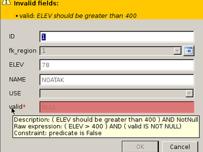
This feature was funded by the QWAT project and the Canton of Zug, Switzerland
This feature was developed by Matthias Kuhn (OPENGIS.ch) and Paul Blottiere (Oslandia)
Feature: Edit attributes of multiple features simultaneously¶
This change allows the attributes of multiple features to be edited simultaneously.
It is enabled when the attribute table dialog is in “form mode”, via a new “multi
edit” button on the toolbar. There’s also a shortcut to edit multiple selected
features by using Edit -> Modify Attributes of Selected Features.
In this mode, attribute value changes will apply to all selected features. New widgets appear next to each editor widget allowing for display of the current multi-edit state and for rolling back changes on a field-by-field basis.
Changes are made as a single edit command, so pressing undo will rollback the attribute changes for all selected features at once.
Multiedit mode is only available for auto generated and drag and drop forms - it is not supported by custom ui forms.

This feature was funded by Kanton Basel Stadt
This feature was developed by Nyall Dawson (North Road)
Layer Legend¶
Feature: New option to zoom to a layer’s visible scale range¶
For layers with a visible scale range set, selecting this option will automatically set the scale to the closest scale where the layer is visible. Additionally, the interface has been tweaked so that layers which are outside their scale range and hidden are shown greyed out in the layer tree.

This feature was funded by MEEM (French Ministry of Sustainable Development)
This feature was developed by Patrick Valsecchi (Camptocamp)
Map Composer¶
Feature: New tools for drawing polygons and polylines¶
Two new types of composer shape items, based on nodes, are now available in the map composer. Using these you can draw polygons or polylines within your composition in just a few clicks.
New tools have also been added to allow editing nodes (ie move or remove nodes) and also to add new nodes to an existing shape. Composer polygon and polyline items can also be styled using all the symbol styles available for line and polygon layers!
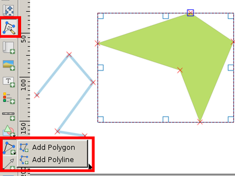
This feature was funded by MEEM (French Ministry of Sustainable Development)
This feature was developed by Paul Blottiere (Oslandia)
Feature: Relative links in composer labels¶
Now labels and HTML boxes can contain relative URLs. If we don’t have a base URL, the project file will be used as a base URL.
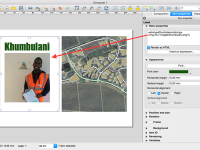
This feature was funded by MEEM (French Ministry of Sustainable Development)
This feature was developed by Patrick Valsecchi (Camptocamp)
Feature: Embed atlas features into composer HTML source as GeoJSON¶
This change makes the current atlas feature (and additionally all attributes of related child features) available to the source of a composer HTML item, allowing the item to dynamically adjust its rendered HTML in response to the feature’s properties. An example use case is dynamically populating a HTML table with all the attributes of related child features for the atlas feature.
To use this, the HTML source must implement a “setFeature(feature)” JavaScript function. This function is called whenever the atlas feature changes, and is passed the atlas feature (and all related attributes) as a GeoJSON Feature.

This feature was funded by Canton of Zug, Switzerland
This feature was developed by Nyall Dawson (North Road)
Feature: Parameterized svg support for composer svg images¶
This change makes it possible to change an SVG files fill and outline colors, and outline width when using parameterised SVG files such as those included with QGIS. For more details on parameterised SVG files see this article.
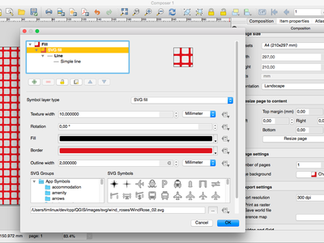
This feature was developed by Nyall Dawson (North Road)
Feature: Easier use of HTML in labels¶
In QGIS 2.16, the base stylesheet of composer labels will automatically set the label font and margins to match the label’s settings. This allows interactive choice of font, margins and colors and avoids the need to manually set these with CSS within the label HTML code.

This feature was developed by Nyall Dawson (North Road)
Feature: Georeference outputs (eg PDF) from composer¶
In QGIS 2.16 the map composer automatically georeferences outputs (when the output format makes this possible, eg TIF and PDF).
The existing option to create a world file has been separated from the map selection for georeferencing. The new behaviour is to always georeference outputs, and only create the separate world file if that option is checked.
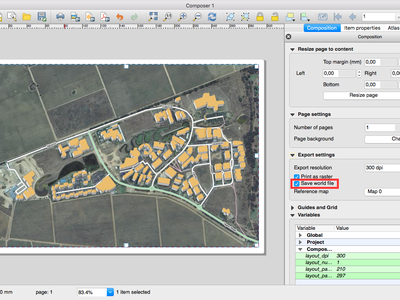
This feature was developed by Nyall Dawson (North Road)
Feature: Composer maps now auto-update with presets¶
When a composer map is set to follow a style preset, it will automatically be updated whenever the style is changed.
A new option has been added in composer map properties: “Follow visibility preset” with a combo box to choose the active preset. This is an alternative to “lock layers” (and “lock layer styles”) functionality which just copy a preset’s configuration, while this new option creates a link to the preset.
The difference is that when a preset is updated, composer map will automatically pick the new configuration when following the preset, while there is no update if “lock layers” (and “lock layer styles”) option is used.

This feature was developed by Martin Dobias
Analysis Tools¶
Feature: Named parameters in expressions¶
In QGIS 2.16 the expression engine now supports use of named parameters.
This means that instead of writing the cryptic expression:
clamp(1,2,3)
you can use:
clamp( min:=1, value:=2, max:=3).
This change also allows arguments to be switched, eg:
clamp( value:=2, max:=3, min:=1).
Using named parameters helps clarify what the arguments for an expression function refer to, which is helpful when you are trying to interpret an expression at a later date!
This feature was developed by Nyall Dawson (North Road)
Feature: More distance units¶
The choice of distance units has been widened, with new options including kilometers, yards and miles. Using these units prevents the need for manual conversion of distances (eg feet to miles).

This feature was developed by Nyall Dawson (North Road)
Feature: Changes to expressions¶
Support
date + time= datetime calculationsSupport for
date - date,time - timeanddatetime - datetimetype calculations which return an interval.New
char()function for returning a matching character by unicode value
Feature: Statistics for string and date fields¶
The statistical summary dock can now calculate aggregate statistics for string and date fields.

This feature was developed by Nyall Dawson (North Road)
Feature: Show curve point radius in info tool¶
If you click on a curved line using the info tool, QGIS will now display the radius in the info tool.

This feature was developed by Marco Hugentobler
Feature: Aggregate support for expressions¶
QGIS 2.16 adds support for a several types of aggregates to the expression engine. These include:
Aggregates within the current layer, eg
sum("passengers")Supports sub expressions (iesum("passengers"/2)), group by (sum("passengers", group_by:="line_segment")), and optional filters (sum("passengers", filter:= "station_class" > 3 ))Relational aggregates, which calculate an aggregate over all matching child features from a relation, eg
relation_aggregate( 'my_relation', 'mean', "some_child_field" )A summary aggregate function, for calculating aggregates on other layers. Eg
aggregate('rail_station_layer','sum',"passengers"). The summary aggregate function supports an optional filter, making it possible to calculate things like:aggregate('rail_stations','sum',"passengers", intersects(@atlas_geometry, $geometry ) )for calculating the total number of passengers for the stations inside the current atlas feature
In all cases the calculations are cached inside the expression context, so they only need to be calculated once for each set of expression evaluations.
This feature was funded by Canton of Zug, Switzerland
This feature was developed by Nyall Dawson (North Road)
Feature: fTools plugin has been replaced with Processing algorithms¶
fTools is a core plugin that for many years has provided the tools found in the
Vector menu in QGIS. With the advent of the QGIS processing framework, the
fTools began to represent a duplication of effort, and many of the tools have
been improved in their Processing equivalents. To address, the fTools plugin has
been removed from QGIS and equivalent menu entries have been added to the vector
menu, pointing to the Processing framework tools that achieve the same thing.

This feature was developed by Alex Bruy
Processing¶
Feature: Set point locations by clicking on canvas¶
Processing parameters expecting a point location can now be set via clicking a location on the map canvas. Previously, coordinates had to be manually entered.
This feature was developed by Alex Bruy
Feature: Support for expressions and variables¶
Inputs and outputs in algorithm dialogs now support QGIS expressions and variables.
This feature was developed by Victor Olaya
Feature: Preconfigured algorithms¶
Algorithms with preconfigured parameters can now be added to the Processing toolbox, as a shortcut for a given process.
This feature was developed by Victor Olaya
Feature: Create a plugin with script-based algorithms from the toolbox¶
Previously, the only way to create a QGIS plugin which added new algorithms to Processing was to manually develop those algorithms and create a new algorithm provider. Now, algorithms can be written as simple Processing scripts, and a plugin containing them can be created directly from the Processing Toolbox. That plugin can be then distributed as a regular plugin, and will extend Processing when active.
This feature was developed by Victor Olaya
Feature: Support for writing tables with no geometry¶
The OutputVector algorithm now supports writing geometryless tables.
For now, this has only been applied on Refactor Fields algorithm but could easily extended to other attributes related algorithms.
This feature was funded by MEEM (French Ministry of Sustainable Development)
This feature was developed by Arnaud Morvan (Camptocamp)
Feature: Additional GRASS algorithms in processing¶
For this release, QGIS Processing now includes every vector, raster and imagery algorithms from GRASS7. Now, there are more than 300 algorithms for you to use directly from the QGIS interface. You have all the power of GRASS7 directly incorporated into QGIS and you can mix GRASS7 algorithms with all other Processing algorithms without having to use a GRASS7 database.
Some unit tests (mostly for raster and imagery algorithms) have also been included for some algorithms, making bug detection easier to handle and to process.
Note that, for the moment, GRASS7 Processing algorithms can only use and produce Shapefile vector layers and GeoTiff rasters. There is also a limit for some GRASS7 raster algorithms (all of the algorithms that are manipulating color tables) which duplicate raster layers to temporary directories. Depending on the size of your source rasters, you will probably need some disk space to handle them.
This feature was developed by Médéric Ribreux
Data Providers¶
Feature: OGR datasets are opened in read-only mode by default¶
Allows concurrent editing of Shapefiles and Tabfiles in both QGIS & MapInfo.
This feature was funded by MEEM (French Ministry of Sustainable Development)
This feature was developed by Even Rouault
Feature: Improved handling of Postgres DOMAIN type fields¶
QGIS now shows the correct domain type as field type name, and is able to correctly determine the length and precision of domain types. See the PostgreSQL documentation to find more information about DOMAIN types.
This feature was developed by Nyall Dawson (North Road)
Feature: Make readOnly mode of vector layers configurable in project¶
Using this option, you can prevent users from inadvertently editing layers.
Go to Project properties -> Identify layers to configure which layers
should be presented as read only.
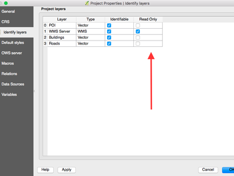
This feature was developed by Matthias Kuhn
Feature: Support for DB2 databases¶
This feature was developed by David Adler
Feature: Refresh Postgres materialized views in db manager¶
Feature: OGR FID attribute shown¶
QGIS now exposes the OGR FID as first attribute when it is meaningful, eg for GPKG and other database based drivers.
This feature was developed by Even Rouault
Feature: ArcGIS Map and Feature REST services¶
QGIS is now able to connect to ArcGIS REST services.
You can connect to ArcGIS Feature services (WFS equivalent in ESRI world) and ArcGIS Map services (WMS equivalent). The provider allows you to read maps and vector layers from those services.
This feature is quite convenient for users who would like to switch from an ESRI GIS stack without losing anything they already have built on private or public map services. You can also connect to public services provided by ESRI.
This feature was funded by Sourcepole QGIS Enterprise
This feature was developed by Sandro Mani, Sourcepole
Feature: Save styles in MS SQL and Oracle databases¶
This feature was developed by Jürgen Fischer and Christian Frugard
Feature: Rename fields in layers¶
In QGIS 2.16 you can now rename fields in Postgres, Oracle, OGR and memory layers by double clicking the field name in the layer properties window.
This feature was developed by Nyall Dawson (North Road)
Feature: Basic support for Oracle Workspace Manager¶
Support has been added for Oracle Workspace Manager when using the Oracle Provider.
See https://github.com/qgis/QGIS/commit/d161612bd216d36dc23ab2307636cf1bc0a36192
This feature was funded by ENEL
This feature was developed by Jürgen Fischer for Faunalia
Feature: Massive improvements to WFS Provider¶
QGIS 2.16 brings an overhaul of the WFS provider, including
Version autodetection
On-disk caching of downloaded features
Background download and progressive rendering
WFS 1.1 and 2.0 support
WFS 2.0 GetFeature paging
Add provider tests
Support for WFS 2.0 joins
URI parameter with sql with SELECT / FROM / JOIN / WHERE / ORDER BY clauses
Handle DateTime fields
Enable “Only request features overlapping the view extent” by default (and memorize the settings)
Support for additional/mixed geometry types (CurvePolygon, CompoundCurve)
More tolerance for non-conforming WFS servers

This feature was funded by Land Information New Zealand and Canton of Zug, Switzerland
This feature was developed by Even Rouault
Feature: Generation of default values on Postgres layers “just in time”¶
The expression used to generate default values for a field on the postgres database are currently being printed on the feature form.
nextval('serial')
A new option in the “project properties” (tab “Data Sources”) allows evaluating the expression before opening the form and will directly print the new value in the feature form.
23
The main advantage of this improvement, is that one can now directly create and link records of related tables before having to save the data first, because the primary key is already present before the feature is saved.

This feature was funded by Canton of Zug, Switzerland
This feature was developed by Matthias Kuhn
QGIS Server¶
Feature: Redlining support in GetMap and GetPrint¶
This feature was funded by Canton of Solothurn
This feature was developed by Marco Hugentobler, Sourcepole
Feature: Default datum transformation for server¶
Will have to dig through https://github.com/qgis/QGIS/commit/70863ecaf0ccfcb538e3892af4b528304b21a0a2 to find details
This feature was developed by Marco Hugentobler (Sourcepole)
Plugins¶
Feature: Refreshed globe plugin¶
Update to OsgEarth 2.8
Rewrite of QGIS globe tile driver
Rewrite of synchronization logic between 2D and 3D
Migration to new geometry kernel
Support for multiple background layers
Menus embedded in globe window
Independent layer selection for globe
Port of Mathias Kuhns master thesis work from QGIS 2.1/OsgEarth 2.4

This feature was funded by Sourcepole QGIS Enterprise
This feature was developed by Sandro Mani, Sourcepole
Feature: Globe: Extrude objects¶
Allow extruding objects into the 3rd dimension.
Either by a fixed value or by an attribute or expression.
This feature was developed by Matthias Kuhn
Feature: API: Add pages to vector layer properties¶
Allow adding additional pages to the vector layer properties dialog.
This allows putting the configuration for layer related options provided by a plugin directly where they belong for a better user experience.
This feature was developed by Matthias Kuhn
Feature: Globe: Vector support¶
When displaying layers on globe, preserve vector data.
This feature was funded by Master Thesis UZH
This feature was developed by Matthias Kuhn
Feature: Globe: Vertical exaggeration for DTM¶
Because sometimes it’s just nice to exaggerate about the size.
This feature was developed by Matthias Kuhn
Programmability¶
Feature: Embedded widgets in layer tree¶
This allows definition of widgets embedded into layer tree for individual layers in the layer properties dialog (in new Legend tab). The idea is to have a way to quickly access to some actions that are often used with a layer.
The implementation comes with transparency widget, in the future there may be more standard widgets coming, e.g. to setup filtering, selection, style or other stuff. The API allows plugins to register their own widgets, which will be useful for various domain specific plugins to assign custom widgets to layers they manage.

This feature was developed by Martian Dobias
Feature: Plugins can add pages to vector layer properties¶
This feature was developed by Sandro Mani (Sourcepole)
Feature: New PyQGIS classes in 2.16¶
New core classes¶
QgsComposerNodesItem - an abstract base class for composer items which provides generic methods for nodes based shapes such as polygons or polylines
QgsComposerPolygon - a composer item for polygon shapes
QgsComposerPolyline - a composer item for polyline shapes
QgsGroupUngroupItemsCommand - a composer undo command class for grouping / ungrouping composer items
QgsConstWkbSimplifierPtr - WKB reader which simplifies geometries on the fly
QgsAction - a utility class that encapsulates an action based on vector attributes
QgsActionManager - stores and manages actions associated with a layer
QgsAggregateCalculator - a utility class for calculating aggregates for a field (or expression) over the features from a vector layer
QgsAttributeTableConfig - a container for configuration of the attribute table for a vector layer
QgsDateTimeStatisticalSummary - calculator for summary statistics and aggregates for a list of datetimes
QgsInterval - a representation of the interval between two datetime values
QgsJSONExporter - handles exporting QgsFeature features to GeoJSON features
QgsJSONUtils - helper utilities for working with JSON and GeoJSON conversions
QgsRuntimeProfiler - simple profiler for timing code paths during execution
QgsSQLStatement - utility class for parsing SQL statements
QgsStringStatisticalSummary - calculator for summary statistics and aggregates for a list of strings
QgsHillshadeRenderer - a renderer for generating live hillshade models
QgsArrowSymbolLayer - line symbol layer used for representing lines as arrows
QgsNullSymbolRenderer - a renderer which draws no symbols for features by default, but allows for labeling and diagrams for the layer
QgsSimpleMarkerSymbolLayerBase - abstract base class for simple marker symbol layers. Handles creation of the symbol shapes but leaves the actual drawing of the symbols to subclasses.
QgsFilledMarkerSymbolLayer - filled marker symbol layer, consisting of a shape which is rendered using a QgsFillSymbolV2
New GUI classes¶
Reusable widgets:¶
QgsMultiEditToolButton - a tool button widget which is displayed next to editor widgets in attribute forms, and allows for controlling how the widget behaves and interacts with the form while in multi edit mode
QgsSearchWidgetToolButton - a tool button widget which is displayed next to search widgets in forms, and allows for controlling how the widget behaves and how the filtering/searching operates
QgsLayerTreeEmbeddedConfigWidget - a widget to configure layer tree embedded widgets for a particular map layer
QgsLayerTreeEmbeddedWidgetProvider - provider interface to be implemented in order to introduce new kinds of embedded widgets for use in layer tree
QgsLayerTreeEmbeddedWidgetRegistry - registry of widgets that may be embedded into layer tree view
QgsAttributeFormEditorWidget - a widget consisting of both an editor widget and additional widgets for controlling the behaviour of the editor widget depending on a number of possible modes
QgsComposerItemComboBox - a combo box which displays items of a matching type from a composition
QgsCompoundColorWidget - a custom QGIS widget for selecting a color, including options for selecting colors via
hue wheel, color swatches, and a color sampler
QgsDockWidget - QDockWidget subclass with more fine-grained control over how the widget is closed or opened
QgsFocusWatcher - an event filter for watching for focus events on a parent object
QgsGradientStopEditor - an interactive editor for previewing a gradient color ramp and modifying the position of color stops along the gradient
QgsMapLayerConfigWidget - a panel widget that can be shown in the map style dock
QgsMapLayerConfigWidgetFactory - factory class for creating custom map layer property pages
QgsPanelWidget - base class for any widget that can be shown as a inline panel
QgsPanelWidgetWrapper - inline panel wrapper widget for existing widgets which can’t have the inheritance tree changed, e.g dialogs
QgsPanelWidgetStack - a stack widget to manage panels in the interface
QgsShortcutsManager - a class that contains a list of QActions and QShortcuts that have been registered and allows their shortcuts to be changed
QgsTableWidgetItem - this can be used like a regular QTableWidgetItem with the difference that a specific role can be set to sort
QgsHillshadeRendererWidget - renderer widget for configuring the hill shade renderer
QgsRasterTransparencyWidget - widget for controlling a raster layer’s transparency and related options
QgsArrowSymbolLayerWidget - renderer widget for configuring arrow symbol layers
Reusable dialogs:¶
QgsOrganizeTableColumnsDialog - dialog for organising (hiding and reordering) columns in the attributes table
QgsConfigureShortcutsDialog - dialog for allowing users to configure shortcuts contained in a QgsShortcutsManager
QgsNewGeoPackageLayerDialog - dialog to set up parameters to create a new GeoPackage layer
QgsSourceSelectDialog - generic widget class for listing layers available from a remote service
Notable Fixes¶
Feature: QGIS Paid Bugfixing Programme¶
We did another round of paid bug fixing (thanks to our sponsors and donors!). Here follow the work summaries of the developers who participated:
Nyall Dawson¶
Here’s the full list (sorted by priority):
Fix broken projective transform in georeferencer (#14551 - severe)
Fix selecting features by radius fails (#14748 - severe)
Fix incorrect area calculation for polygon (#14675 - severe, although very unlikely to occur. Unit tests added to cover this edge case)
Fix dock widget layout (#15011 - severe)
Fix crash in arrow symbol layer (unreported)
Fix crash when creating invalid join (unreported)
Fix parameterised SVGs not shown for composer arrow items (#14997 - high)
Classifications on joined fields should only consider values which are matched to layer’s features (#9051 - high)
Always use string comparison in expressions for string fields (#13204 - high)
Fix home dir being added as default svg and template path (#14662, #14652, #14883 - high)
Fix crash when using inverted polygons with heatmap renderer (#14968 - high)
Save raster symbology values with full precision (#14950 - normal)
Actions are not enabled when loading layer with default style (#13910 - normal)
Remove “attribute table” text from dialog title (#14959 - normal)
Fix cannot deactivate customization widget catcher (#9732 - normal)
Fix arrow symbol layer head width/height flipped (#15002 - normal)
Fix joins are not recreated when loading project with bad layers (#10500 - normal)
Invalidate join cache when layer is modified (#11140 - normal)
Correctly support joins using virtual fields (#14820 - normal)
Fix virtual fields which depend on other virtual fields may not be calculated in some circumstances (#14939 - normal)
Fix rule based labels not shown when using python expression functions (#14985 - normal)
Auto refresh when symbol levels changed in style dock (#14861 - normal)
Fix style dock button not synced to dock state (#14862 - normal)
Fix issues rendering SVG with text (#14644, #14794 - normal)
Ensure data defined button displayed fields are always up to date (#14809 - normal)
Fix cannot set shortcut for zoom in (#14958 - normal)
Fix inverted polygons and displacement renderer don’t allow right click on legend items (#14966 - normal)
Fix inverted polygon & displacement renderer don’t show colour wheel in legend menu (#14967 - normal)
Add missing proxies for legend check behaviour to sub renderers for inverted polygon and displacement renderers (unreported)
Fix joined attributes can’t be used in filter expressions (#13176 - low)
Show WKB type in vector layer metadata (unreported)
Add missing capabilities strings to layer metadata (unreported)
Fix debug noise when using 25D geometry layers (unreported)
Fix some status bar widgets could not be hidden via customisation (unreported)
Make styling widget live apply remember setting (unreported)
Don’t show constraint messages when form is in search mode (unreported)
Show scrollbars for attribute form as identify results (unreported)
Make style dock Apply button always enabled (unreported)
Fix some missing auto updates from style dock (unreported)
I also forward ported a bunch of fixes from Sourcepole’s fork.
Even Rouault¶
Here are the tickets he has dealt with during his allocated time for QGIS 2.16 bug fixing.
Severe/High:
https://issues.qgis.org/issues/15006: Crashes in standalone browser
https://issues.qgis.org/issues/14876: WFS client broken in QGIS master
https://issues.qgis.org/issues/13762: Error accessing external WMS server – WMS provider: Cannot calculate extent
https://issues.qgis.org/issues/14927: Attribute table sorting problem with qgis-rel-dev (2.14.X regression)
https://issues.qgis.org/issues/15064: QGIS crashes on OGR layers with wkbUnknown25D, wkbUnknownM/Z/ZM layer geometry type
https://issues.qgis.org/issues/14844: Oblique Mercator projection hanging when rendering map
https://issues.qgis.org/issues/15047: ASSERT failure in QVector[HTML_REMOVED]::at: “index out of range” in qgis_attributetabletest (TestQgsAttributeTable)
https://issues.qgis.org/issues/15087: Crash when deleting the last segment of a compoundcurve
Normal
https://issues.qgis.org/issues/14965: wfs provider copies features when zooming in and out
https://issues.qgis.org/issues/14928: WMS request without BBOX
https://issues.qgis.org/issues/14999: Spatialite provider does not support alphanumeric primary keys (backport in 2.14)
http://hub.qgis.org/issues/15061: Cannot add WFS layer
https://issues.qgis.org/issues/15065: Failed detection of geometry type in some conditions
https://issues.qgis.org/issues/15066: OGR: Sublayers detected sometimes when not relevant (Polygon/CurvePolygon)
https://issues.qgis.org/issues/15067: DXF export creates invalid file
https://issues.qgis.org/issues/15081: Impossible to clear geometry of feature from a shapefile
unreported [Geometry] Fix various issues related to Wkb/Wkt import
Other:
https://issues.qgis.org/issues/14981: Import of Shapefile to Geopackage-Database in DB-Manager fails (analysis)
https://issues.qgis.org/issues/15011: Browser panel is unusable (bisection & analysis)
https://issues.qgis.org/issues/14909: regression: QGIS crashes when closing docked attribute table (analysis)
https://issues.qgis.org/issues/13353: QGIS and gdal 2.0.0 (closed: no further action needed)
https://issues.qgis.org/issues/15053: WMS with EPSG:31255 is shifted (datum=hermannskogel) (analysis. probably outdated proj.4 version)
Sandro Santilli¶
http://hub.qgis.org/issues/14262: Overflow on primary key with negative values; cannot save edits
http://hub.qgis.org/issues/12228: Deadlock from parallel rendering
http://hub.qgis.org/issues/11371: Map Composer: group + move + ungroup + undo = crash
http://hub.qgis.org/issues/14976: Repository files modified by “make check”
http://hub.qgis.org/issues/13635: Different handling of invalid geometries between LTR and master version
http://hub.qgis.org/issues/13952: QGIS node tool causes snapping another feature randomly
Martin Dobias¶
Digitizing: “Simplify Feature” should not open a dialog when no feature is clicked
Digitizing: how to abort “Simplify Feature” or “Rotate Feature” tool is not that obvious
One road missing upon Add Vector Layer!
Autotracing fails with Circular Arcs in geometries
WMS not working on master a625eeb (2.15.0-80)
Processing preconfigured algorithms python error
GPS don’t record geometry point, but only attribute values…
style dock: transparency panel (global transparency, transparent pixel, etc.) not working for hillshade renderer
style dock: back button & breadcrumb missing when a rule-based label rule is being edited
Fix undo/redo for rule-based renderer/labeling in styling dock
Fix updates of undo widget in styling panel
style dock: hillshade renderer’s global transparency value resets after changing symbology settings
style dock: values of raster’s layer rendering options not properly restored
Matthias Kuhn¶
Improve QgsMapLayerRegistry stability
Processing: Difference algorithm: don’t ignore invalid geometries by default
Fixed some Python 3 compatibility issues
Work on re-enabling osx tests (merged after 2.16 release)
API documentation
startup.py is executed twice
UX fixes:
Attribute table: always show sequential column header numbers
Relation Reference Widget: Only enable form button when a feature is set
Show feature id in attribute table tooltip
Initial widget focus in credential dialog
Default timeout for message bar items
Add button” state in postgis source select dialog
Install missing header files
Crash on exit
Network cache directory
Feature form hidden behind main window on Windows
Offline editing: Respect relative paths
Offline editing: changed attributes end up in wrong feature
Offline editing: Don’t crash with raster layers
Relation form grows infinitely
Fix crash when loading style in layer properties
Fix crash when closing docked attribute table
Fix default-misconfigured gpsbabel path
Show correct feature count with rule that requires geometry
Fix crash when using 2.5D renderer with incompatible layer